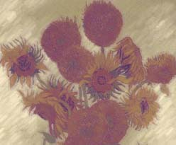

|
Van Gogh:
I put them in a vase, but they would not be contained.
Their light is a million worms, writhing masked
as petal flesh. I feel it crawling towards my face,
reaching for my fingers clasped hard on the handle
of the brush. Imitation is all I can achieve, the light so
much more alive than what the canvas will show.
These pigments deceive, cannot rise to the task
of life and light, nor can I. At the end of the day
Gauguin watches me, says I am like a woman now,
bringing posies home to light this cheerless place.
When I close my eyes to sleep, does he know
how the faces of the flowers laugh?
|
 |